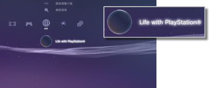

網路 > 關於 Life with PlayStation®
關於 Life with PlayStation®
Life with PlayStation®是一個以「時間」和「場所」為重心，表現網路上各種內容的應用程式。選擇不同的頻道，即可享受多采多姿的內容。
啟動Life with PlayStation®時亦會自動參加Folding@home™計劃。Folding@home™是美國史丹佛大學推動的分散式運算計畫。
啟動Life with PlayStation®
開始使用Life with PlayStation®前，需先下載及安裝程式。在 （網路）選擇
（網路）選擇 （Life with PlayStation®），即可在網路下載程式。請遵從畫面指示，正確操作。
（Life with PlayStation®），即可在網路下載程式。請遵從畫面指示，正確操作。

提示
- 要啟動Life with PlayStation®，PS3™的硬碟需準備500MB以上的可用容量。
- 若顯示
 （Folding@home™）圖示，需在更新Folding@home™後，再更新至Life with PlayStation®。請在（網路）選擇（Folding@home™），並遵從畫面指示更新Folding@home™。更新後請再度在（網路）選擇（Folding@home™），並遵從畫面指示，更新至Life with PlayStation®。
（Folding@home™）圖示，需在更新Folding@home™後，再更新至Life with PlayStation®。請在（網路）選擇（Folding@home™），並遵從畫面指示更新Folding@home™。更新後請再度在（網路）選擇（Folding@home™），並遵從畫面指示，更新至Life with PlayStation®。
結束Life with PlayStation®
Life with PlayStation®啟動中時，按下無線控制器的PS按鈕，並選擇（網路）的 （結束）。
（結束）。
設定自動啟動
PS3™閒置一定時間內沒有操作後，會自動啟動Life with PlayStation®。進入（網路）選擇（Life with PlayStation®）並按下 按鈕，開啟選項選單後選擇［自動啟動］。
按鈕，開啟選項選單後選擇［自動啟動］。
| 關 | 不自動啟動Life with PlayStation®。 |
|---|---|
| 10分後 | 10分後啟動Life with PlayStation®。 |
| 20分後 | 20分後啟動Life with PlayStation®。 |
| 30分後 | 30分後啟動Life with PlayStation®。 |
提示
PS3™未與網路連線時，此項自動啟動會暫時無效。
刪除Life with PlayStation®
從硬碟刪除Life with PlayStation®。進入（網路）選擇（Life with PlayStation®）並按下按鈕，開啟選項選單後選擇［刪除］。
提示
刪除程式並無法自XMB™刪除（Life with PlayStation®）的圖示。只要選擇此圖示，即能再度下載Life with PlayStation®的程式。